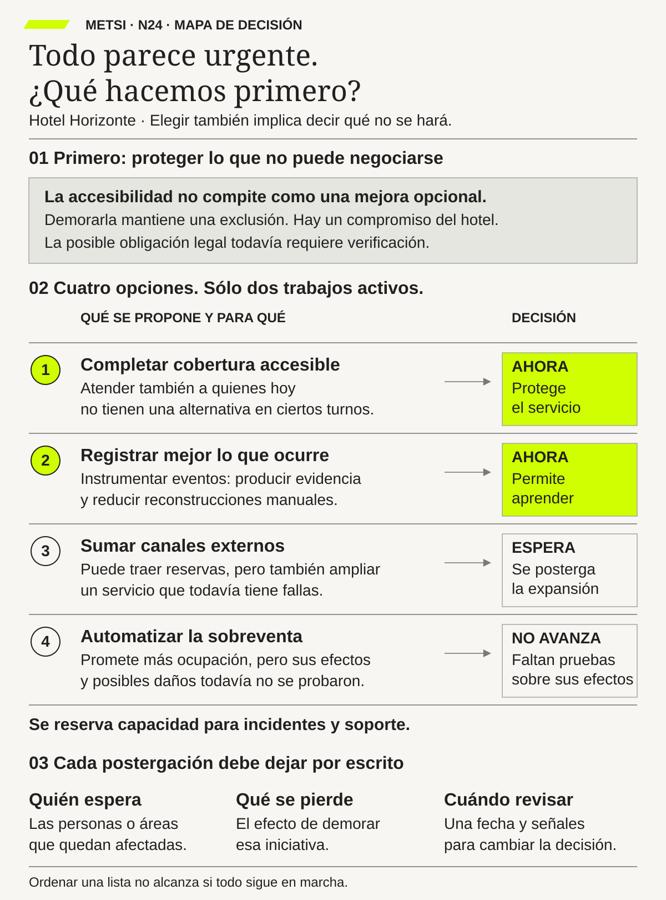

Fernando Flores
Creando organizaciones para el futuroDolmen · 1997
Ayuda a mirar las promesas que se asumen al aceptar una prioridad y las responsabilidades que permanecen cuando se la posterga.

Priorizar exige volver explícitas las renuncias y quién deberá esperar.
Priorizar es elegir qué avanza y qué tendrá que esperar
Ruta priorizada: 1 h 20 min a 1 h 40 min. Núcleo de lectura: 60 a 75 min; preparación: 20 a 25 min. Las extensiones agregan 30 a 45 min y profundizan el recorrido.

Nota. SIN NUM. identifica aparatos de orientación y referencia.
Seis referentes y las obras principales utilizadas para construir N24.
Ayuda a mirar las promesas que se asumen al aceptar una prioridad y las responsabilidades que permanecen cuando se la posterga.

Aporta una mirada sobre participación: quienes viven las consecuencias también deben poder discutir cómo se define el problema.

Permite convertir límites y políticas de trabajo en reglas observables, en lugar de etiquetas que cambian con cada presión.

Ayuda a reconocer costos de coordinar y contratar que no aparecen en el precio inicial de una propuesta.

Permite examinar dependencias y formas de gobierno que condicionan el costo de sostener una alternativa.

Aporta métodos para contrastar el recorrido declarado con registros de lo que efectivamente ocurrió.
N24 no resume estas fuentes ni las convierte en receta. Las pone en tensión para construir juicio profesional.
Cuando no podemos hacer todo, ¿cómo elegimos qué hacer primero sin esconder las consecuencias para quienes tendrán que esperar?

Priorizar convierte la escasez en renuncias explícitas y conserva consecuencias en unidades pertinentes.
Imaginá un hospital que reúne diecisiete propuestas para el próximo trimestre. Un área quiere mejorar los turnos. Otra pide mantenimiento. Otra necesita una corrección de accesibilidad. También hay pedidos de seguridad, reportes y automatización. Es una situación didáctica de gestión; las decisiones clínicas, técnicas y legales reales requieren a sus responsables competentes.
Cada área marca su pedido como urgente. La dirección arma una matriz, asigna puntos y obtiene doce propuestas casi empatadas. Entonces pide ajustar la fórmula. Parece un problema de cálculo, pero falta resolver una pregunta anterior: ¿qué debe protegerse, qué puede esperar y qué trabajo es realmente posible hacer?
No todas las propuestas están expresadas de la misma manera. «Cumplir una condición de seguridad» no es equivalente a «agregar un reporte». «Mejorar la atención» todavía no dice qué se haría ni a quién ayudaría. Si se puntúan esas frases sin aclararlas, el número final mezcla cosas que nadie llegó a comparar bien.
Además, el mismo equipo que debería ejecutar las mejoras atiende incidentes. Una autoridad tiene que validar varias decisiones y dispone de poco tiempo. El presupuesto puede alcanzar para contratar desarrollo y, aun así, faltar capacidad de revisión. Tener dinero para empezar no significa poder terminar.
El equipo cambia la conversación. Primero identifica condiciones que deben respetarse y quién puede interpretarlas. Después distingue el trabajo que sostiene servicios existentes de las propuestas que buscan mejorarlos. Dentro de ese espacio compara alternativas: qué resultado esperan, qué recursos necesitan y qué pasa si esperan un mes.
La decisión sigue siendo difícil. Una corrección poco visible puede desplazar una mejora que muchas personas piden. Una oportunidad puede perderse mientras se protege un servicio esencial. Una fórmula no elimina esa tensión. Lo que sí puede hacerse es explicarla, conservar los argumentos y fijar cuándo volver a revisarla.
Priorizar no es poner números delante de una lista. Es decidir qué recibe atención ahora y qué no. Si las diecisiete propuestas siguen consumiendo tiempo, llamarlas prioridad uno, dos o tres no resolvió el problema. Sólo cambió las etiquetas.
HH-23 dejó un recorrido limitado para llegadas y varias posibilidades de continuación. El hotel puede ampliar cobertura a otros turnos, mejorar la información que recibe, incorporar agencias o automatizar otras decisiones. Ninguna opción queda aprobada simplemente porque figure como «siguiente paso».

En HH-24 el equipo compara cuatro propuestas durante una ventana de ocho semanas. Son opciones del caso, no una recomendación universal de cómo invertir en un hotel.
La primera busca completar la cobertura accesible en más turnos. Hay personas cuya atención todavía depende de comprobaciones o apoyos que no están igualmente disponibles durante todo el día. La segunda busca registrar mejor los eventos de llegada y reasignación para entender qué ocurrió y reducir reconstrucciones manuales. La tercera incorpora canales externos. La cuarta propone automatizar decisiones sobre sobreventa.
Camila quiere avanzar con canales porque ve una oportunidad comercial. Federico propone mejorar los registros y las conexiones. Mariela muestra problemas de cobertura que afectan la atención. Lucía pide mirar las reasignaciones y la carga que cada propuesta dejaría en Recepción. Todos aportan algo relevante, pero decirles que sí a todos no crea tiempo adicional.
Elena separa dos preguntas. Una es qué compromisos y protecciones deben sostenerse. La otra es qué mejoras conviene elegir con la capacidad restante. La cobertura accesible tiene un compromiso institucional verificado y hay evidencia de una exclusión que debe atenderse. El posible fundamento normativo sigue en un registro aparte, pendiente de validación competente. El equipo no lo inventa ni supone que la falta de una fuente localizada autoriza a ignorar el problema.
Para hacer visible la capacidad, el ejercicio usa veinte jornadas-persona de un recurso compartido asignadas a esta ventana. No son veinte días de calendario ni toda la dotación del hotel. Los antecedentes indican que entre seis y nueve de esas jornadas pueden ser necesarias para soporte, incidentes y revisión. Quedan entre once y catorce para el trabajo considerado, antes de asumir que cualquier combinación de tareas cabe en ese rango.
La validación de Operaciones resulta especialmente limitada. Aunque hubiera más programación disponible, Lucía y Mariela no podrían revisar todo a la vez sin afectar la atención. El equipo acota los primeros cortes y evita planificar como si siempre fuera a disponer del extremo más favorable del rango.
Elena autoriza dos frentes activos de cartera: cobertura accesible e instrumentación de eventos. La ampliación de canales queda postergada y debe revisarse antes de perder su oportunidad de temporada. La automatización de sobreventa no se hará en esta ventana: faltan evidencias sobre su mecanismo y sus consecuencias. No se la presenta como una promesa ya asumida.
La instrumentación tampoco entra gratis. Mariela señala que las primeras semanas requieren confirmaciones manuales adicionales. Se reduce el alcance inicial y se prepara apoyo para no cargar esa tarea silenciosamente sobre su turno. Si el supuesto beneficio depende de trabajo que nadie incluyó, la comparación debe corregirse.
Camila cuestiona la demora de los canales. Tiene razones para hacerlo. Se comparan escenarios de demanda y se conserva la oportunidad postergada. Pero una previsión de ingresos mayor no demuestra que el hotel pueda cumplir nuevas confirmaciones. La incorporación sigue condicionada a información oportuna, atención y reparación; no sólo a que la campaña parezca conveniente.
Más adelante, una falla de cerraduras consume parte del margen previsto. El equipo atiende la situación según su política y revisa los compromisos afectados. No agrega una tercera mejora como si las personas pudieran multiplicarse. Tampoco declara que toda la decisión anterior fue un error: explica qué supuesto cambió y qué consecuencia tiene ahora.
HH-24 termina con algo más útil que una lista ordenada: trabajo admitido, trabajo que espera, trabajo que no se hará en esta ventana y razones para cada decisión. N25 seguirá las modificaciones dentro de esos frentes para ver si llegan a uso o si continúan esperando en otras colas.
Priorizar es elegir bajo límites. Cada vez que dedicamos una capacidad escasa a una opción, dejamos menos para otra. Una decisión responsable hace visible esa renuncia en lugar de prometer que todo avanzará al mismo tiempo.
Un ejemplo cotidiano: tenés una tarde para estudiar y hacer un trámite que vence mañana. Elegir estudiar dos horas tiene un costo distinto según el trámite pueda hacerse otro día o se pierda una oportunidad que no vuelve. No alcanza con preguntar qué actividad te gusta más. Importan el plazo, las consecuencias y las alternativas reales.
En una organización aparecen más personas y responsabilidades. Una demora puede afectar ingresos, carga de trabajo, accesibilidad o seguridad. Esas consecuencias no siempre se pueden sumar en una sola unidad. Un número puede ayudar a comparar algunas opciones, pero no debe esconder qué se dejó afuera ni quién definió los pesos.
También hay límites que no son preferencias. Si una condición debe respetarse, la organización no puede compensar su incumplimiento con muchos puntos en otra columna. Primero tiene que determinar qué exige esa condición y qué alternativas legítimas tiene para cumplirla. Después podrá comparar esas alternativas por costo, tiempo y efectos.
Esto no significa declarar sagrada cualquier propuesta que alguien llame obligatoria. Hay que distinguir la fuente, su interpretación y la solución elegida. Una exigencia puede admitir varias formas de cumplimiento. Una preferencia de la dirección no se convierte automáticamente en ley. Y una duda sobre la fuente necesita revisión competente, no una respuesta inventada por el equipo.
La prioridad, además, debe poder revisarse. La demanda cambia, un proveedor falla o una propuesta deja de mostrar el beneficio esperado. Mantener el orden por orgullo puede ser tan perjudicial como cambiarlo ante cada pedido. Por eso se acuerdan una fecha y señales concretas para volver a decidir.
En el hotel, priorizar significa poder responder: por qué cobertura accesible e instrumentación reciben capacidad ahora, qué pierde la opción de canales mientras espera y qué tendría que cambiar para reconsiderarla. Una persona puede discrepar con la decisión y, aun así, comprenderla. Ese es un estándar más serio que mostrar una celda verde en una planilla.

N23 preparó cortes posibles: porciones pequeñas pero completas de una capacidad. Ahora tenemos que elegir entre ellas. Ser una buena entrega posible no basta para recibir prioridad. Puede haber otra más necesaria o faltar una condición para realizarla.
N24 mira el conjunto de compromisos, llamado cartera o portafolio. No pregunta sólo si una iniciativa vale la pena en aislamiento, sino cómo convive con las otras y con la operación diaria. Varias ideas razonables pueden formar una cartera imposible.
N25 seguirá el tiempo real de las modificaciones. Por eso N24 debe conservar cuándo se pidió algo, cuándo recibió capacidad, por qué se pausó y cuándo se revisará. Mover una tarjeta a «después» no borra la espera de quien hizo el pedido.
El límite de dos frentes de cartera tampoco equivale a dos tareas técnicas. Cada frente puede contener varias modificaciones. N25 estudiará el trabajo abierto dentro de esos recorridos con otra unidad y otra frontera. Los límites se relacionan, pero sus números no se comparan como si contaran lo mismo.
Reinertsen ayuda a mirar cómo cambia una consecuencia mientras el trabajo espera. Goldratt y Cox permiten reconocer el recurso que limita el conjunto, aunque otras personas tengan horas libres. Little y Vacanti aportan relaciones y métricas para observar trabajo abierto y tiempos; N25 las desarrollará con sus condiciones de uso.
Anderson y la Guía Kanban ayudan a explicitar reglas de entrada, tratamiento y control del trabajo. Kersten vincula asignación de recursos con resultados sostenidos, y el estándar de cartera de PMI permite mirar compromisos como un conjunto. Ninguna de estas fuentes decide por nosotros qué población debe esperar.
Box y Draper ayudan a no confundir un modelo con la realidad. Davenport y Harris relacionan análisis con decisiones organizacionales. Una planilla puede ordenar argumentos, pero necesita datos, supuestos y una autoridad que asuma el resultado.
Mintzberg y Waters permiten observar la diferencia entre lo planificado y los patrones que se forman al actuar. McGrath, MacMillan y Ries ayudan a revisar compromisos cuando todavía hay incertidumbre. Coase y Williamson incorporan costos de coordinación y dependencia que pueden quedar fuera del precio de una propuesta.
Van der Aalst aporta métodos para reconstruir recorridos a partir de registros. Esos registros necesitan significado: un cambio de columna no demuestra que dejó de consumirse trabajo. Los informes DORA y los marcos de gestión de servicios permiten examinar capacidades técnicas y operativas, sin sustituir la evaluación del efecto sobre las personas.
Las referencias de OCDE, Unión Europea y CEPAL permiten discutir servicios, desarrollo digital y responsabilidades en sus respectivos ámbitos. No se traslada automáticamente una norma europea al hotel argentino. Las fuentes regionales también ayudan a preguntar quién orienta la inversión y quién puede discutirla. Retomaremos esa pregunta después de construir la comparación.
«Necesitamos una aplicación» es un pedido. Todavía no es una opción suficientemente definida para compararla. Falta saber qué problema atendería, para quién, con qué alcance y qué necesitaría de la organización.
Una opción podría decir: «Durante estas ocho semanas, permitir que Recepción identifique dos causas de reasignación que hoy se registran igual, con apoyo de Housekeeping y revisión de los episodios». Ya podemos discutir un resultado, un alcance y recursos. No sabemos aún si debe elegirse, pero sabemos mejor qué estamos comparando.
Conviene dar a todas las opciones un nivel parecido de detalle. Si la favorita tiene ejemplos, costos y beneficios, mientras otra aparece como «mantenimiento», la comparación nace inclinada. A veces la propuesta menos visible parece menos valiosa simplemente porque nadie tuvo tiempo de explicarla.
Para cada opción preguntamos: qué cambiaría, a quién afecta, qué recursos escasos necesita, qué condiciones debe respetar y qué ocurre si espera. Cuando falta evidencia, se declara. No se completa el casillero con un número inventado para que la planilla quede prolija.
Una prioridad indica que una opción debe recibir atención antes que otra bajo ciertas condiciones. No es una propiedad que la idea tenga para siempre. «Es prioritario» queda incompleto si no sabemos frente a qué alternativa y por qué.
En HH-24, ampliar cobertura accesible precede a incorporar canales dentro de la capacidad compartida. Eso no significa detener toda tarea del hotel relacionada con ventas. Significa no consumir con esa expansión los recursos necesarios para la cobertura definida.
También hace falta una condición de cierre. «Mejorar accesibilidad» puede ser un objetivo permanente demasiado amplio para ordenar un período concreto. El corte debe describir qué turnos y qué condiciones quedarán cubiertos y cómo se comprobará. Delimitar un trabajo no elimina la responsabilidad por las necesidades restantes: las mantiene visibles.
Una propuesta puede beneficiar a un grupo y cargar trabajo sobre otro. Por eso hablamos de valor situado: lo valioso depende de la situación, de las personas y del resultado buscado.
Automatizar un aviso puede ahorrar minutos en Comercial y generar más llamadas a Recepción si comunica una promesa confusa. Desde una métrica local parece una mejora. Desde el servicio completo puede empeorar la atención. Hay que mirar ambas consecuencias.
El valor no se reduce a ingreso ni a satisfacción. Puede consistir en evitar una exclusión, sostener una capacidad, reducir un riesgo o aprender antes de comprometer más recursos. No hace falta asignarles la misma unidad para reconocer que importan.
La propuesta también puede equivocarse sobre su valor. Una función prometía bajar llamadas y termina aumentándolas. La prioridad debe revisarse a partir del uso, no conservarse porque el caso de negocio fue aprobado. Aprobar una estimación no la vuelve verdadera.
Supongamos que un servicio debe ofrecer una vía de acceso adecuada para una población. Esa condición no determina por sí sola qué aplicación comprar. Puede haber varias soluciones compatibles, con distintos tiempos y costos. Separar el deber de la solución permite comparar sin poner el deber a competir como una preferencia.
El registro debe distinguir de dónde proviene la exigencia: norma aplicable, contrato, compromiso institucional u otra fuente. Después identifica quién puede interpretarla y qué decisión de diseño se tomó para atenderla. Son tres niveles distintos.
En el hotel está verificado un compromiso institucional. Mariela aporta evidencia sobre personas mal atendidas. La eventual fuente jurídica tiene una validación pendiente. No corresponde afirmar que Mariela estableció una obligación legal, ni esperar a resolver una búsqueda documental para reconocer el daño observado y sostener la protección acordada.
Cuando hay obligaciones en tensión o dudas sobre su alcance, se consulta a la autoridad competente y se define una respuesta provisional justificada. Una matriz de prioridades no es un tribunal ni una evaluación especializada de seguridad.
Dos expresiones suelen mezclarse: costo de oportunidad y costo de demora. Las dos hablan de consecuencias, pero responden preguntas diferentes.
El costo de oportunidad pregunta: ¿cuál es la mejor alternativa factible a la que renuncio al elegir esta? Si una tarde alcanza para una de dos actividades, elegir una impide hacer la otra en ese momento. No se calcula sumando todas las cosas imaginables que podrías haber hecho.
En HH-24, dedicar un recurso de validación a una personalización comercial puede desplazar una corrección de cobertura. La comparación debe hacerse con alternativas realmente posibles para ese recurso y ese período. No sirve contrastar una propuesta concreta con un beneficio ideal que nadie podría producir.
Tampoco el costo de oportunidad es el presupuesto de lo que se descartó. Una opción barata puede producir un resultado importante que dejamos de obtener. Otra muy costosa puede tener poco valor adicional. El gasto y el beneficio desplazado son cosas distintas.
El costo de demora pregunta: ¿qué cambia si esta opción espera? Puede crecer una pérdida, mantenerse un daño o desaparecer una oportunidad. Para responder hace falta un horizonte: esperar una semana y esperar un año no suelen producir lo mismo.
En un ejercicio simple, una mejora ahorraría cien unidades de esfuerzo por semana una vez en uso. Si los supuestos se mantienen, postergarla una semana deja ese ahorro sin realizar durante esa semana. Es un ejemplo didáctico, no una cotización ni una garantía de beneficio.
Otra propuesta tiene una fecha: habilitar un canal antes de una campaña. Su valor puede caer mucho después de esa fecha. Dos semanas de demora antes del cierre comercial pueden ser más importantes que dos semanas en otro momento.
Una tercera protege una condición del servicio. Mientras espera, algunas personas siguen sin una atención adecuada. Ese efecto debe describirse directamente. No se vuelve insignificante porque sea difícil expresarlo en dinero o porque afecte a menos personas.
Estas formas no siempre son líneas simples. Hay incertidumbre sobre demanda, esfuerzo y consecuencias. Un rango con supuestos claros puede ser más útil que un valor exacto que nadie sabe explicar. También conviene registrar qué dato haría cambiar la estimación.
A veces una demora permite obtener información o aprovechar una dependencia que estará disponible pronto. Ese posible beneficio se registra como valor de esperar. No borra el costo que la espera puede producir al mismo tiempo.
Camila puede perder una oportunidad comercial por postergar un canal. A la vez, el hotel puede evitar ampliar una confirmación todavía frágil y obtener evidencia sobre la información que envía la agencia. Son efectos distintos que deben compararse, no una única cifra a la que cambiamos el signo según convenga.
La espera necesita una pregunta y un plazo. «Esperamos dos semanas para observar esta condición y volver a decidir» es diferente de «esperamos hasta estar seguros de todo». La segunda frase puede mantener indefinidamente una propuesta sin asumir que fue abandonada.
En N23, capacidad significaba poder completar un recorrido. Aquí usamos también capacidad disponible para hablar de cuánto trabajo puede sostenerse en un período. No conviene confundir ambos sentidos.
Una persona puede saber resolver una llegada compleja y no tener tiempo para atender diez al mismo tiempo. Un equipo puede conocer una tecnología y no disponer del ambiente de prueba que necesita. La posibilidad existe, pero su volumen y oportunidad están limitados.
Las horas contratadas no equivalen a horas libres para iniciativas. Hay atención diaria, coordinación, mantenimiento, incidentes y aprendizaje. Tratar esos trabajos como si no existieran hace que cualquier variación termine en sobrecarga o incumplimiento.
El cálculo de HH-24 empieza con veinte jornadas-persona de un recurso compartido. Si soporte y revisión consumen entre seis y nueve, el resto es entre once y catorce. Esa resta no demuestra que dos propuestas que suman once jornadas puedan terminar: pueden competir por una autorización o una ventana que no está disponible cuando la necesitan.
El margen tampoco debe contarse dos veces. Si esas seis a nueve jornadas ya contemplan un tipo de incidente, no se vuelven a descontar bajo otro nombre sin explicarlo. Si aparece un riesgo adicional, se revisa la estimación. La cuenta tiene que poder reconstruirse.
Imaginá tres mesas que preparan expedientes y una sola persona que puede revisarlos. Si las mesas producen más rápido, la pila de revisión puede crecer sin que salgan más expedientes válidos. El problema no se resuelve manteniendo a todos ocupados al máximo.
A ese recurso que condiciona la salida se lo llama restricción o cuello de botella. Puede ser una persona, un permiso, un ambiente o una decisión. No siempre es el sector con más tareas visibles.
Goldratt y Cox ayudan a orientar la atención hacia esa restricción. En HH-24, antes de financiar más programación, hay que comprobar cuánto puede validar Operaciones sin degradar la atención. Una mejora pequeña que libera esa revisión puede ser más útil que otra que genera más trabajo para ella.
La respuesta no siempre es «hacer menos». Puede convenir reducir retrabajo, cambiar una regla, preparar mejor las solicitudes o ampliar capacidad. Lo importante es intervenir sobre una causa comprobable, no exigir más esfuerzo general porque la lista es larga.

Priorizar es elegir bajo límites.
Una política de prioridad explica cómo se decide qué entra, cómo se trata y qué puede alterar el orden. No elimina el juicio. Evita que cada pedido dependa sólo de quién consigue hablar más fuerte con la dirección.

Una política puede distinguir incidentes que requieren respuesta inmediata, trabajos con fecha fija, mantenimiento y mejoras. Cada grupo necesita criterios de entrada y tratamiento. No alcanza con crear cuatro carriles de colores si cualquier persona puede usar el más rápido.
Una clase de servicio es una manera acordada de tratar demandas con consecuencias distintas. Por ejemplo, una avería que impide atender puede requerir una respuesta diferente de una mejora sin fecha externa. La clasificación debe apoyarse en el problema, no en el rango de quien lo pide.
Para una vía urgente, la organización declara qué hechos la habilitan, quién decide, cuántos casos puede admitir y qué ocurre con el trabajo desplazado. También distingue contención inmediata, reparación y mejora permanente. Si toda la mejora posterior conserva la etiqueta de emergencia, la excepción puede durar meses.
Una fecha fija no significa que el trabajo deba entrar a último momento como una urgencia. Si se conoce con anticipación, permite preparar capacidad. Usar siempre la vía rápida por falta de planificación traslada la espera a quienes respetaron el proceso.
En HH-24, proteger cobertura accesible significa asignarle una política concreta y una capacidad definida. No implica que cualquier tarea que lleve la palabra «accesibilidad» deba desplazar automáticamente todo lo demás. Hay que describir su aporte, su límite y la condición que protege.
Las clases pueden coexistir y tener recursos distintos. Una urgencia puede usar una reserva realmente disponible sin pausar otro frente. Si excede esa reserva o requiere la misma persona escasa, hay que declarar qué se posterga o cambiar explícitamente los compromisos. El trabajo no desaparece porque se lo llame excepcional.
Una dependencia habilitante es algo cuyo avance permite realizar otra opción o reduce de manera demostrable su dificultad. En el hotel, registrar eventos comparables puede ayudar a entender varias causas de reasignación y a evaluar nuevos cortes.
Pero «esto servirá para todo» no es una justificación suficiente. Hay que nombrar consumidores concretos: qué decisión permitirá tomar, qué trabajo evitará y qué evidencia mostraría que la dependencia realmente ayudó.
Supongamos que se propone una plataforma enorme para habilitar un pequeño cambio. Antes de darle prioridad, se pregunta si el cambio necesita toda esa plataforma, una parte o una solución temporal más limitada. La respuesta puede ser que sí necesita una preparación importante, pero debe demostrarse.
Una ruta transitoria también tiene costo. Una conciliación manual puede permitir aprender antes, pero consume tiempo y puede fallar. Se compara con la alternativa de construir primero la capacidad común, sin presentar ninguna secuencia como inevitable por ser técnica.
Una matriz puede ayudar a comparar opciones de manera consistente. El problema no está en usar números, sino en no saber qué representan. Un ocho en «beneficio» puede significar cosas distintas para dos personas. Sumarlos con precisión decimal no resuelve esa diferencia.
Hay que hacer visibles los criterios, las escalas y sus pesos. También qué consecuencias no se están agregando. Si una protección obligatoria aparece simplemente como tres puntos más, otra opción podría compensarla con ingreso. El cálculo estaría permitiendo un intercambio que no se había autorizado.
Las escalas ordinales sirven para expresar orden —bajo, medio, alto, o categorías numeradas—, pero no garantizan distancias iguales. El ocho no necesariamente representa el doble del cuatro. Tratar esas estimaciones como mediciones naturales puede producir una precisión aparente.
WSJF significa Weighted Shortest Job First. Es un enfoque de secuenciación que relaciona una estimación del costo de demora con el tamaño o duración del trabajo. En su uso dentro de SAFe emplea estimaciones relativas para ayudar a ordenar trabajos. El resultado sigue dependiendo de cómo se estimaron sus componentes. [Referencia del marco](https://
En un ejemplo didáctico, A recibe doce puntos de demora y un tamaño de seis: cociente dos. B recibe nueve y tamaño tres: cociente tres. La regla sugeriría B antes que A. Pero si nueva información muestra que B tiene tamaño cinco, su cociente baja a 1,8 y cambia el orden. No apareció una verdad nueva en la división: cambió un supuesto.
Este análisis de sensibilidad pregunta si la decisión se mantiene cuando varían estimaciones plausibles. Si cambia con una pequeña variación, conviene mostrar esa fragilidad, obtener información o asumir explícitamente el criterio que resolverá el empate. No se la oculta redondeando resultados.
La regla tampoco reemplaza el análisis de obligaciones, dependencias, fechas ni recursos compartidos. Y no resuelve el exceso de trabajo activo: ordenar veinte opciones y empezar quince puede mantener la misma dispersión.
El contraejemplo opuesto es decidir sólo por jerarquía. Puede no haber ninguna fórmula y, aun así, ocultarse quién espera y qué recurso falta. N24 no exige consenso en todas las decisiones. Exige razones, autoridad y consecuencias que puedan revisarse.
Aceptar una opción como trabajo activo significa que recibirá atención real. Si se admiten más opciones de las que el equipo puede atender, todas comienzan a competir por reuniones, pruebas y decisiones. La lista avanza en muchos lugares, pero cuesta terminar algo.
Un límite de trabajo en curso, WIP por work in progress, controla cuánto trabajo iniciado permanece sin terminar dentro de una frontera definida. En cartera, además, puede fijarse un límite de frentes que reciben capacidad simultáneamente. Es importante declarar qué cuenta cada límite.
HH-24 mantiene dos frentes activos. Eso no significa que sólo existan dos solicitudes ni que las restantes hayan desaparecido. Tampoco autoriza a dividir una tercera propuesta en tarjetas pequeñas y repartirlas dentro de las dos existentes para eludir la decisión.
El límite no es un número sagrado. Si dos opciones no compiten por el recurso escaso, puede revisarse. Si una sola consume toda la validación, dos pueden ser demasiadas. La evidencia del trabajo, no la estética del tablero, debe orientar el ajuste.
Pongamos atención a una trampa frecuente. Una iniciativa pasa a «pausada», pero continúan consultas, reuniones y revisiones. No liberó toda la capacidad que decía liberar. Hay que registrar el esfuerzo que sigue consumiendo.
Incluso si deja de recibir atención, un elemento iniciado y no terminado sigue siendo WIP bajo esa definición del flujo. Pausarlo no reinicia su antigüedad ni borra su tiempo de espera. Podemos reducir los frentes con asignación activa sin afirmar falsamente que disminuyó todo el trabajo abierto.
Si se cancela formalmente un compromiso, se registra su cierre, sus consecuencias y cualquier necesidad que permanezca pendiente. No se lo cuenta como entrega exitosa. Si luego comienza otro trabajo, se conserva la relación con el anterior en lugar de presentarlo como una solicitud recién nacida.
Esta distinción importa para N25. La organización puede mejorar sus números moviendo el punto de inicio o cambiando etiquetas, mientras quien necesita el cambio espera lo mismo. El registro de demanda y el de compromiso deben permitir reconstruir ambos tiempos.
La Guía Kanban de mayo de 2025 articula definir y visualizar el flujo, gestionar los elementos e introducir mejoras. Pide aclarar unidades, inicio y final, estados, control del trabajo, políticas y una expectativa de tiempo asociada a una probabilidad. También exige observar trabajo abierto, salidas, edad y tiempo de ciclo. [Guía Kanban](https://
En HH-24, esas ideas se aplican a una pregunta sencilla: ¿qué debe ocurrir para que una propuesta reciba capacidad y cómo sabremos que el compromiso terminó? Las opciones previas al compromiso siguen visibles. No entran automáticamente porque alguien escribió «urgente».
El tablero ayuda a comprobar si las reglas se cumplen. Si aparece una opción nueva y nadie puede explicar de dónde salió su capacidad, hay una decisión faltante. Si algo permanece detenido, hay que mirar su edad y su causa, no sólo su ubicación.
Kanban no decide por sí solo qué valor proteger. Las obligaciones, el daño y la distribución de beneficios requieren otros argumentos. Una circulación más rápida de trabajo inadecuado no resuelve el problema de prioridad.
La gobernanza de cartera es la forma de decidir y revisar el conjunto de opciones y compromisos. Suena grande, pero incluye preguntas concretas: quién puede admitir trabajo, con qué información, qué límite debe respetar y cómo se revisa una renuncia.
La dirección necesita conocimiento local. Camila puede detectar una ventana comercial; Mariela, una carga de trabajo omitida; Lucía, una consecuencia sobre huéspedes. Escucharlas no obliga a que todas las propuestas avancen. Permite decidir con una representación menos incompleta.
Una fecha de revisión indica cuándo volver a examinar la decisión. Debe venir acompañada de una pregunta. Por ejemplo: «Antes de la temporada, ¿la información del canal llega a tiempo y hay capacidad para atender sus excepciones?». Sin esa pregunta, la reunión puede convertirse en una repetición del estado anterior.
También hay señales que exigen revisar antes: un incidente grave, una dependencia que falla, una nueva obligación validada o una pérdida importante de capacidad. No se espera al calendario si cambió una condición esencial. Pero tampoco se reorganiza todo por cada preferencia nueva.
La revisión puede mantener el orden. Si las condiciones siguen y la evidencia lo sostiene, no hace falta cambiar para demostrar flexibilidad. Puede también reducir alcance, pausar, sustituir una solución o abandonar una propuesta. Esas decisiones no son equivalentes y deben comunicarse como tales.
Una propuesta puede haber consumido mucho esfuerzo y dejar de tener sentido. Ese gasto pasado es un costo hundido cuando ya no puede recuperarse. Seguir sólo para no admitirlo puede sumar una pérdida nueva.
La decisión mira consecuencias futuras: qué queda por invertir, qué beneficio plausible queda, qué cuesta detener y qué obligaciones deben atenderse. El trabajo hecho puede haber producido activos o conocimiento útiles, pero hay que evaluarlos por su aporte actual, no por la necesidad de justificar el gasto.
Por ejemplo, detener una automatización no elimina la obligación de atender a quienes ya dependen de ella. El cierre puede requerir migración, comunicación y soporte. Esos costos futuros sí importan para comparar continuar o salir. No deben confundirse con el esfuerzo irrecuperable ya realizado.
Para que la elección pueda discutirse, HH-24 conserva doce respuestas. La finalidad no es producir un expediente largo: es evitar que una decisión importante dependa de una explicación privada.
1. Resultado buscado. Qué cambiaría para las personas o para la operación. En instrumentación, no es «instalar registros», sino poder distinguir causas y reducir reconstrucciones que impiden decidir bien. Su efecto deberá comprobarse.
2. Personas afectadas. Quién recibe el beneficio, quién sostiene el trabajo y quién sigue esperando. El huésped no es la única persona afectada; también hay turnos que absorben verificaciones.
3. Opción concreta. Qué se propone hacer dentro de qué alcance y período. Las cuatro opciones de HH-24 se comparan sobre ocho semanas, sin suponer que serán completadas todas.
4. Alternativa que espera. Qué no se hará ahora, se reducirá o no se hará de esa manera. Canales queda postergado; automatizar sobreventa no se admite en esta ventana. Son decisiones diferentes.
5. Condiciones que deben respetarse. Se identifica fuente y autoridad. El compromiso institucional de cobertura está verificado; una posible fuente jurídica conserva su estado de validación pendiente.
6. Costo de oportunidad. Se describe la mejor alternativa factible desplazada por usar el mismo recurso. No se suman beneficios incompatibles ni se imagina capacidad inexistente.
7. Consecuencia de esperar. Se explican escenarios y fechas. En canales, puede decaer una oportunidad; en cobertura, continúa una situación de exclusión; en instrumentación, permanece trabajo de reconstrucción.
8. Capacidad real. Se declaran recursos críticos, trabajo operativo y margen. Las veinte jornadas-persona del ejemplo no se ofrecen por completo a iniciativas si parte ya será necesaria para sostener el servicio.
9. Dependencias. Se muestra qué necesita cada opción y qué habilita. Una infraestructura que promete servir a todas debe demostrar al menos usos y decisiones concretas.
10. Política de tratamiento. Se explica cómo entra el trabajo, qué prioridad recibe y qué haría una urgencia. La reserva no es infinita ni una excusa para omitir el efecto sobre lo comprometido.
11. Decisión y autoridad. Elena decide la cartera dentro de sus responsabilidades; las autorizaciones especializadas conservan a sus responsables. Camila documenta la oportunidad postergada, Mariela aporta evidencia de operación y Lucía conserva la posibilidad de detener una exposición insegura dentro del protocolo acordado.
12. Revisión. Se fijan fecha, señales y pregunta. La opción de canales se reconsidera antes de su ventana comercial y cuando cambien información, capacidad o riesgo. No se promete que por llegar esa fecha quedará automáticamente aprobada.
Las objeciones permanecen en el registro. No hace falta fingir que Camila dejó de ver valor en la campaña para justificar otra prioridad. Su argumento puede volver a ser relevante si cambian las condiciones. Conservarlo ayuda a revisar sin reescribir la historia.
Una cartera parece razonable en condiciones favorables. Para comprobarla, conviene cambiar algunos supuestos y observar qué decisiones exigiría. Estos son ejercicios de análisis, no predicciones sobre el hotel.
Primero, supongamos que un incidente reduce un treinta por ciento la capacidad disponible para la ventana restante. Si quedaban diez jornadas-persona utilizables para cierto trabajo, pasarían a siete en este escenario. La cuenta muestra el déficit, pero no decide dónde recortar.
El equipo revisa protecciones, alcance y dependencias. Puede detener una ampliación, buscar una alternativa o solicitar capacidad competente adicional. No debe distribuir la falta de tiempo informalmente entre todos y mantener las mismas promesas. Tampoco puede suponer que la cobertura protegida se cumple sólo por dejarla primera en la lista: debe comprobar cómo se sostendrá con los recursos reales.
Segundo, supongamos que la oportunidad comercial resulta mucho mayor que lo previsto. Hay un motivo válido para revisar. Pero la nueva demanda no arregla la información incompleta del canal. Deben evaluarse tanto el beneficio como la condición que impedía ampliar. Si esa condición sigue faltando, un mejor ingreso esperado no la reemplaza.
Tercero, aparece una mejora pequeña sin patrocinio fuerte. Permitiría evitar una revisión duplicada que ocupa al recurso limitante. Puede merecer prioridad aunque no tenga una presentación vistosa. La política debe permitir que aparezca ese valor mediante evidencia, no sólo mediante influencia.
Cuarto, un proveedor ofrece una función sin costo de compra. Todavía puede requerir integración, validación, soporte, formación y una dependencia futura. «Gratis» describe un precio, no la ausencia de costo de oportunidad. La opción debe pasar por las mismas preguntas de capacidad y consecuencias.
Quinto, se retira una estimación de beneficio porque sus datos no son confiables. La idea no necesita desaparecer: puede pasar a una investigación breve y limitada. Priorizar también puede significar obtener información antes de decidir una inversión mayor. Esa investigación compite por recursos y debe tener una pregunta y un cierre.
Si el registro permite explicar estas respuestas, la prioridad está mejor preparada para el trabajo real. Si sólo vuelve a ordenar números sin cambiar compromisos, todavía no resuelve la restricción.
Volvamos al ejemplo hospitalario, ahora con cuatro opciones: mejorar una interfaz, reemplazar un equipo, reforzar ciberseguridad y reducir una demora administrativa. La lectura no establece qué intervención clínica o de seguridad corresponde. Esa evaluación requiere profesionales y autoridades del ámbito.
El primer paso es separar condiciones que deben cumplirse y alternativas para hacerlo. Si un equipo no puede usarse de manera segura, una mejora visual no compensa ese problema. Pero la respuesta concreta puede incluir medidas transitorias y un reemplazo planificado, según la evaluación competente. «Hay una obligación» no implica que sólo exista una solución técnica.
Las opciones comparten recursos. Una ventana de mantenimiento puede ser necesaria para el reemplazo y para una intervención tecnológica. Las personas que prueban una interfaz pueden ser las mismas que sostienen la atención. Sumar presupuestos no muestra esas restricciones.
También cambia quién soporta la espera. Puede ser una persona que no consigue completar un trámite, un equipo clínico que realiza tareas duplicadas o alguien cuya información necesita protección. Hay consecuencias menos visibles que el volumen de consultas en un tablero.
El registro compara alternativas dentro de los límites aplicables, identifica capacidad y deja explícito qué se posterga. Si surge un conflicto entre condiciones, se escala a quienes pueden resolverlo. La matriz no se usa para inventar una jerarquía de obligaciones.
La transferencia muestra qué se conserva del hotel: hacer visibles límites, recursos y renuncias. Lo que no se copia es la prioridad concreta ni el nivel de riesgo aceptable. Un método de comparación no vuelve equivalentes servicios con consecuencias distintas.
Llamar urgente a todo. Si la etiqueta no distingue consecuencias, deja de orientar. Hay que explicar qué pasa al esperar y qué política corresponde.
Ordenar la lista sin retirar compromisos. Si todo sigue recibiendo atención, el exceso de trabajo permanece. Una prioridad real modifica asignación y promesas.
Poner una obligación dentro de un puntaje compensable. Primero se identifica qué condición debe respetarse. Después se comparan soluciones compatibles, con validación competente cuando corresponde.
Convertir toda consecuencia en dinero. Puede ayudar a comparar ciertos efectos, pero no representa por sí solo derechos, distribución del daño o una exclusión. Lo no monetizado no debe desaparecer.
Usar una cifra sin mostrar de dónde salió. Pesos, escalas y supuestos pueden determinar el resultado. Se revisa cómo cambia el orden al variar esos supuestos.
Contar horas como si fueran intercambiables. Una hora de desarrollo no reemplaza automáticamente una autorización o una revisión especializada. Mirá el recurso que limita el recorrido.
Planificar ocupación total. Si no queda margen para variación y atención, los incidentes desplazan trabajo sin aviso o producen sobrecarga. La capacidad sostenible no es ocupación máxima permanente.
Transformar cada urgencia en una excepción indefinida. La contención necesita salida. La mejora de fondo se planifica con capacidad explícita.
Seguir porque ya se gastó mucho. La decisión compara consecuencias futuras, incluidos costos de salida. El gasto irrecuperable no aumenta por sí mismo el beneficio de continuar.
Olvidar lo postergado. Una fecha y una señal de revisión protegen contra el abandono silencioso. Si se abandona, debe decirse y atender sus compromisos.
Esconder trabajo pausado. Cambiar de columna no termina un elemento ni elimina su espera. Se distingue capacidad asignada de trabajo abierto.

Priorizar de esta manera puede hacer menos atractiva una promesa inicial, pero más comprensible lo que realmente se asumió. El profesional tiene que poder decir no, no ahora o no con ese alcance, y explicar qué alternativa se está protegiendo.
La autoridad conserva una responsabilidad que el modelo no puede asumir por ella. Puede elegir sin unanimidad, pero necesita criterios y una vía de revisión. La participación mejora la información y permite objeciones; no significa que cada persona tenga veto sobre todas las opciones.
Los números siguen siendo útiles. Pueden mostrar costos, rangos y cuellos de botella. Su límite aparece cuando representan como comparables consecuencias que no lo son o cuando ocultan la incertidumbre bajo demasiados decimales. La respuesta es mejorar la representación, no abandonar el análisis.
También existe tensión entre lo inmediato y lo importante a largo plazo. Atender siempre lo urgente puede impedir mantenimiento, aprendizaje y capacidades futuras. Proteger sólo proyectos estratégicos puede abandonar daños presentes. La cartera necesita mostrar ambas dimensiones y las razones de su equilibrio.
Si la vía urgente domina continuamente, quizás el problema no sea el orden de la lista. Puede haber compromisos comerciales imposibles, mantenimiento postergado o demanda evitable. La revisión debe poder cambiar esas causas, no limitarse a reorganizar la misma sobrecarga.
Varsavsky invita a preguntar qué necesidades orientan el desarrollo. En una cartera, esa pregunta se vuelve concreta: qué recibe presupuesto, qué se presenta como innovación y qué problema queda esperando porque no tiene un promotor fuerte.
Freire ayuda a examinar cómo participan las personas afectadas. No alcanza con mostrarles una lista ya decidida para que la validen. Sus experiencias pueden cambiar la definición del problema y revelar consecuencias que la dirección no había considerado.
Flores y Echeverría permiten mirar qué compromisos se crean al aceptar o postergar pedidos. «Lo vemos más adelante» puede sonar amable y mantener una expectativa indefinida. Una decisión más responsable aclara qué se hará, qué no y en qué condiciones se volverá a conversar.
Etkin y Schvarstein ayudan a observar reglas y relaciones de poder que sostienen algunas prioridades. Scolari permite reconocer costos que circulan entre interfaces y personas. García y Bunge aportan una mirada de conjunto: liberar tiempo en un área puede sobrecargar otra y no mejorar el servicio.
Maturana y Varela ofrecen una perspectiva para examinar cómo se construyen nuestras interpretaciones, sin convertir el desacuerdo en un problema que desaparece con más datos. CEPAL sitúa la transformación digital en preguntas de desarrollo e inclusión, más amplias que incorporar herramientas.
Estos aportes no autorizan a describir a todas las organizaciones de la región como iguales. En cada caso hay que verificar quién tiene voz, qué recursos faltan y qué exclusiones persisten. En Hotel Horizonte, la evidencia de Mariela tiene que entrar en la decisión junto con la oportunidad que señala Camila. No porque ambas deban obtener la misma prioridad, sino porque ambas muestran consecuencias reales del orden elegido.
Priorizar significa asignar capacidad y aceptar una renuncia. Para hacerlo hay que definir opciones comparables, reconocer límites y explicar quién se beneficia y quién espera. Una lista ordenada no alcanza si todas las opciones siguen activas.
El costo de oportunidad muestra la alternativa factible desplazada. El costo de demora muestra qué cambia mientras una opción espera. El posible valor de esperar agrega otra consideración, sin borrar el daño o la oportunidad que se pierde durante ese tiempo.
Las políticas de tratamiento y los límites ayudan a sostener decisiones bajo presión. Los puntajes pueden apoyar la comparación, pero no reemplazan autoridad, evidencia ni condiciones que deben cumplirse. La revisión permite cambiar sin ocultar las razones anteriores.
HH-24 deja dos frentes activos: cobertura accesible e instrumentación. Conserva capacidad para sostener la operación y hace visibles canales postergados y sobreventa no admitida en esta ventana. N25 observará si las modificaciones avanzan hasta el uso o si el orden elegido todavía se pierde entre esperas y transferencias.

Prioridad. Decisión de atender una opción antes que otra bajo objetivos, recursos y límites determinados.
Cartera o portafolio. Conjunto de opciones y compromisos que se decide y revisa de manera relacionada.
Renuncia explícita. Decisión visible de no hacer algo, hacerlo después o hacerlo de otra manera, con sus consecuencias reconocidas.
Valor situado. Beneficio relevante para ciertas personas y condiciones, que puede convivir con costos para otras.
Costo de oportunidad. Valor de la mejor alternativa factible desplazada por una elección.
Costo de demora. Consecuencia de postergar una opción durante un período: beneficio que no se obtiene, daño que continúa u oportunidad que cambia.
Valor de esperar. Posible beneficio de conservar una opción abierta mientras se obtiene información o cambia una condición. No elimina automáticamente el costo de la demora.
Clase de servicio. Política de tratamiento para demandas con características y consecuencias diferentes.
Dependencia habilitante. Condición o capacidad que permite avanzar en otras opciones y cuyo aporte puede comprobarse.
Capacidad disponible. Cantidad de trabajo que puede sostenerse con recursos y condiciones reales, además de la operación existente.
Restricción. Recurso o condición que limita el resultado del conjunto, aunque otras partes puedan trabajar más rápido.
WIP. Trabajo iniciado y todavía no terminado dentro de una frontera definida. Una pausa no equivale a una finalización.
WSJF. Enfoque de ordenamiento que relaciona costo de demora estimado y tamaño o duración del trabajo. Su utilidad depende de supuestos y escalas.
Análisis de sensibilidad. Comprobación de cómo cambia una conclusión cuando varían supuestos plausibles.
Costo hundido. Gasto pasado que ya no puede recuperarse. No es, por sí solo, razón para invertir más.
Gobernanza de cartera. Reglas, información y autoridades para admitir, sostener, revisar y cerrar compromisos.
Para el encuentro, prepará cuatro opciones y elegí cuáles recibirán capacidad. Incluí una condición que deba respetarse, dos renuncias explícitas y una revisión. Después reducí la capacidad disponible y explicá qué cambiarías. La propuesta tiene que poder entenderse sin aceptar un puntaje como respuesta suficiente.